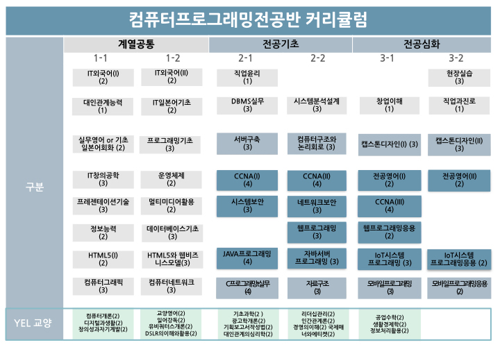

* IoT/모바일/웹 분야 소프트웨어 개발자 양성
* 네트워크/보안/클라우드 분야 시스템 엔지니어 양성
IoT/모바일/웹 분야 SW 개발자 양성 및 NW/보안/클라우드 분야 시스템 엔지니어 양성을 위한 SW와 시스템 통합 교육과정으로 편성

소프트웨어 개발 분야
IoT, 모바일, 웹 분야 응용 SW 개발 능력을 갖춘 전문 인력양성 교육
네트워크/보안/클라우드 분야
국제공인자격인 시스코 네트워킹 자격증(CCNA, CCNP, CCIE) 취득을 위한 체계적 교육
지식정보화 역기능에 대처하는 시스템/네트워크 보안을 위한 실무중심의 교육
시스템 및 네트워크, 보안장비의 구축/운영을 위한 실무능력 배양
* 모바일/웹 분야 응용 SW 개발업체
* IoT 임베디드 시스템 개발 업체
* 국내 대기업 전산실 및 SI 업체
* 정보통신/네트워크 서비스 관련업체
* 정부기관(공무원), 금융기관 및 각종 산업체의 전산실
* 미국/캐나다/호주/일본 대기업 및 IT기업
* IT 관련 벤처 창업
국제공인
* CCNA/CCNP/CCIE, LPIC, OCJP, MCP/MCSE, RHCE, CompTIA
국가공인
* 정보처리산업기사, 정보보안산업기사 등
민간자격
* 임베디드 S/W 개발전문가, 리눅스마스터, 시스템관리사, 네트워크관리사, 인터넷보안전문가, 웹마스터, 정보검색사 등